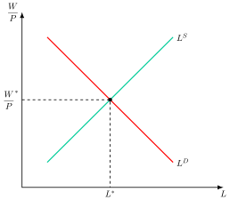
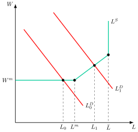
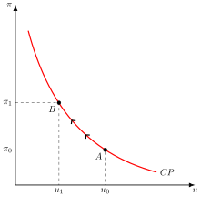
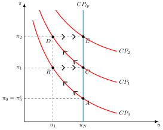
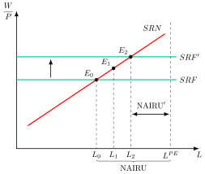
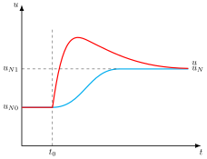
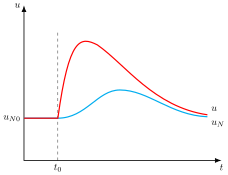
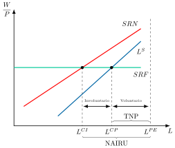
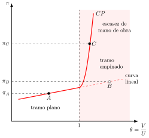

Apuntes para la oposición al Cuerpo de Diplomados Comerciales del Estado
11 Análisis macroeconómico del mercado de trabajo. La tasa natural de paro y la NAIRU. La persistencia del desempleo.
11.1 Introducción  1'
1'
La existencia de desempleo es uno de los mayores problemas de las economías modernas. Tiene costes económicos, porque deja recursos ociosos y aleja a la economía de su nivel de actividad potencial, y costes de bienestar, tanto para los parados como para el conjunto de la sociedad.
Pero, ¿por qué hay personas dispuestas a trabajar al salario vigente que no encuentran empleo? ¿Puede la política económica reducir el paro de forma duradera, o solo a costa de una inflación cada vez mayor? ¿Y por qué, tras una recesión, el paro tarda tanto en bajar o no vuelve nunca a su nivel anterior?
Para responder a estas preguntas, el objetivo de la presente exposición será el análisis macroeconómico del mercado de trabajo a través del siguiente esquema:
El mercado de trabajo en los modelos tradicionales, neoclásico y keynesiano.
De la curva de Phillips a la tasa natural de paro, con Friedman y Phelps y la Nueva Macroeconomía Clásica.
La NAIRU de la Nueva Economía Keynesiana.
La persistencia del desempleo y la histéresis.
11.2 El mercado de trabajo en los modelos tradicionales 2'30"
Antes de la curva de Phillips, el debate sobre el mercado de trabajo enfrentó dos visiones con supuestos y recomendaciones de política opuestos: la neoclásica, en la que la flexibilidad de los salarios asegura el pleno empleo y solo existe paro voluntario, y la keynesiana, en la que la rigidez de los salarios nominales y la insuficiencia de la demanda agregada pueden generar paro involuntario.
El modelo neoclásico
El modelo neoclásico explica por separado el desempleo y la inflación, y se basa en tres pilares:
El nivel de empleo se determina por la interacción de la oferta y la demanda de trabajo y los precios y salarios, que se asumen flexibles, actúan como mecanismo de ajuste.
Se cumple la ley de Say, según la cual la oferta crea su propia demanda al distribuirse vía rentas todos los ingresos generados por la venta de la producción.
El dinero solo es un medio de pago, se cumple la teoría cuantitativa del dinero, por lo que existe una dicotomía entre el sector real y el sector monetario.
La teoría neoclásica del mercado de trabajo
La intuición es que el salario real funciona como cualquier otro precio: si sobran trabajadores, baja hasta que todo el que quiere trabajar a ese salario encuentra empleo. Respecto al mercado de trabajo, parte de los siguientes supuestos:
Los precios y salarios son plenamente flexibles, actuando como mecanismo de ajuste.
Los agentes son racionales y actúan en un entorno de competencia perfecta.
Definen la oferta de trabajo como la agregación de las ofertas individuales que surge del problema de maximización de la utilidad, que depende del ocio y del consumo, y será una función que dependa positivamente de los salarios reales \[RMS_{O,C}=\dfrac{W}{P}\;\Rightarrow\;L^{S}=L^{S}\left(\dfrac{W}{P}\right),\quad\dfrac{\partial L^{S}}{\partial(W/P)}>0 \tag{11.1}\] es decir, que el individuo ofertará trabajo hasta que su tasa subjetiva de intercambio entre ocio y consumo se iguale a la del mercado. La agregación horizontal de los tramos crecientes1 de las ofertas individuales de trabajo da lugar a la oferta agregada de trabajo, que será creciente con el salario.
La demanda de trabajo se deriva del problema de maximización del beneficio de la empresa, de modo que la demanda de trabajo será aquella que iguale la productividad marginal del trabajo con el salario real: \[F_{L}\left(K,L\right)=\dfrac{W}{P}\] Así la demanda de trabajo depende negativamente del salario real: \[L^{D}=f\left(\dfrac{W}{P}\right)\] y la demanda de trabajo del mercado se obtiene por la agregación de las demandas individuales.
Gráficamente, en un plano de salarios reales y cantidad de trabajo como el de Figura 11.1 se puede representar la oferta, \(L^{S}\), y la demanda de trabajo, \(L^{D}\), el equilibrio se establecerá en la intersección entre ambas para un nivel de empleo y salario real asociados. El mercado de trabajo siempre estará en equilibrio ya que las fuerzas de mercado asegurarán pleno empleo, es decir, no existe paro involuntario, solo voluntario.2

Además, para ese nivel de empleo de equilibrio, dada la función de producción, solo existe un nivel de producción, por lo que la oferta agregada será vertical: los cambios de la demanda solo alteran los precios.3
Implicaciones de política económica
Si el mercado se vacía solo, no hay paro involuntario que corregir y la política de demanda es innecesaria: con la oferta agregada vertical, solo altera los precios. El paro que existe es voluntario, y solo se reduce con medidas que actúen sobre la oferta o la demanda de trabajo o que eliminen lo que impide que el salario se ajuste.
Frente a este enfoque, Keynes, ante las graves consecuencias de la Gran Depresión de los años treinta y la incapacidad de los neoclásicos para dar una respuesta satisfactoria a los problemas económicos de la misma, llevará a cabo una revisión crítica de los postulados de esta escuela de pensamiento.4
El modelo keynesiano
Para Keynes, los problemas económicos derivan de la insuficiencia en la demanda, criticando así el cumplimiento de la ley de Say, y de la existencia de desempleo involuntario –al contrario que los neoclásicos, que afirmaban que solo existía desempleo voluntario–. Como los hogares no gastan en consumo toda su renta, para vender la producción de pleno empleo hace falta una inversión que cubra la diferencia, y nada garantiza que la haya. Puede darse así una insuficiencia de la demanda agregada, entendida como aquella situación en que la demanda agregada es tan débil que no permite absorber la producción asociada al pleno empleo.5
La teoría keynesiana del mercado de trabajo
La intuición es que las empresas no contratan según el salario, sino según lo que esperan vender: si la demanda de bienes es débil, no habrá empleo para todos, aunque los parados estén dispuestos a trabajar al salario vigente. En el mercado de trabajo, Keynes va a establecer una relación entre salario real y salario nominal, e introduce el supuesto de ilusión monetaria. Para Keynes la demanda de trabajo tendrá pendiente negativa y dependerá negativamente de los salarios reales, de la misma manera que en la teoría neoclásica.
Sin embargo, la oferta de trabajo, a diferencia de la neoclásica, ahora es creciente no con el salario real sino con el salario nominal:
La consecuencia es que existirá rigidez a la baja de los salarios nominales en la negociación.
No obstante, los trabajadores aceptarán bajadas en los salarios reales cuando aumente el nivel de precios, porque lo que les preocupa es su salario relativo, es decir, su salario frente al de otros grupos de trabajadores, que una subida general de precios no altera.
Este hecho junto con la insuficiencia de demanda, va a generar paro involuntario.
Analíticamente, el salario nominal al que los trabajadores ofrecen cada nivel de empleo, \(W^{S}\), es un salario mínimo nominal, \(W^{m}\), más un tramo creciente con el nivel de empleo, \(g\left(L\right)\): \[W^{S}=W^{m}+g\left(L\right),\quad g^{\prime}>0\text{ si }L>L^{m},\;g=0\text{ si }L\leq L^{m} \tag{11.2}\] donde si la cantidad de trabajo ofrecida es superior a la asociada al salario mínimo, \(L^{m}\), entonces la función \(g\left(L\right)\) será creciente y si es menor o igual entonces es nula.
Gráficamente, en un plano de salario nominal y nivel de empleo como el de la Figura 11.2, se representa la oferta de trabajo keynesiana, \(L^{S}\), con un tramo horizontal para el salario mínimo nominal, \(W^{m}\), creciente para niveles superiores al mismo y completamente vertical al nivel asociado al pleno empleo, \(\bar{L}\).
El hecho de que la demanda agregada sea insuficiente se muestra gráficamente con una demanda de trabajo, \(L^{D}_{0}\), que corta a la oferta de trabajo en su tramo horizontal, esto es, en un nivel de empleo, \(L_{0}\), inferior al que los trabajadores están dispuestos a ofrecer al salario mínimo nominal, \(L^{m}\). La diferencia entre \(L^{m}\) y \(L_{0}\) será el paro involuntario, es decir, el de quienes desean trabajar al salario vigente y no encuentran empleo.
En este contexto, una política económica que estimule la demanda agregada y la desplace a la derecha, hará aumentar los precios, reducirá el salario real y, con ello, desplazará a la derecha la curva de demanda de trabajo, \(L^{D}_{1}\), con lo que el desempleo baja a \(L_{1}\). La diferencia entre \(\bar{L}\) y \(L_{1}\) será el paro voluntario.

Esta lectura de Keynes la retomaron los economistas del desequilibrio, como Clower (1965) y Malinvaud (1977), para quienes, cuando los precios no vacían los mercados, los agentes racionados en un mercado ajustan sus decisiones en los demás, de modo que el empleo depende también de las ventas de las empresas y el paro involuntario puede persistir aunque el salario real no cambie.6
Implicaciones de política económica
Por consiguiente, según Keynes, en una situación con recursos ociosos –que, según él, será lo más frecuente–, una política económica expansiva que estimule la demanda agregada podrá aumentar los niveles de empleo y de producción. El Estado debe sostener la demanda con la política fiscal y la monetaria, en lugar de esperar a que los salarios se ajusten.
Como síntesis, Keynes ya observa que para disminuir el desempleo se precisa aumentar la demanda agregada, lo que provocará aumentos en los precios y por lo tanto inflación. Sin embargo, este aumento en precios es puntual y el análisis de la inflación requiere de un tratamiento dinámico. Este trade-off entre inflación y desempleo provoca la existencia de una “ecuación perdida” en el sistema keynesiano, es decir, la conocida como curva de Phillips.
11.3 De la curva de Phillips a la tasa natural de paro 5'
El análisis dinámico del mercado de trabajo arranca con la síntesis neoclásica. Una de las cuestiones centrales del modelo IS-LM era explicar cómo se transmite un incremento de la demanda agregada en términos de aumentos de precios y expansión de la renta. Para ello, la síntesis neoclásica abandonó el supuesto estático de precios fijos y pasó a analizar la interrelación entre la inflación y el desempleo mediante la curva de Phillips.
La curva de Phillips de la síntesis
Planteada por el economista neozelandés Alban W. Phillips (Phillips 1958), la curva permitiría dar respuesta a esta cuestión, al encontrar una relación inversa y no lineal entre la tasa de variación de los salarios nominales y la tasa de desempleo, lo que permitía resolver el problema de la síntesis neoclásica sobre qué parte de una expansión va a aumentos de precios y qué parte a aumentos de la producción.7 La intuición es sencilla: cuando hay poco paro, las empresas compiten por los trabajadores y los salarios suben deprisa, y cuando hay mucho, apenas crecen. A partir de este hallazgo empírico se van a desarrollar nuevas teorías de la inflación y el desempleo.
De esta forma, la curva de Phillips es incorporada dentro de la síntesis neoclásica como mecanismo para explicar la relación entre inflación y desempleo, que era uno de los elementos que le faltaban al modelo IS-LM –la “ecuación perdida”–. La curva de Phillips permitía relacionar la determinación del nivel de producción y el empleo con la inflación de salarios y precios, y lleva a dos conclusiones:
La inflación se inicia como consecuencia de un aumento del gasto agregado.
Las expansiones de demanda agregada tienen efectos sobre el output –empleo– y la inflación, de modo que existe un trade-off entre ambas magnitudes.
La existencia de una relación inversa y estable entre inflación de salarios y desempleo plantearía un problema de política económica: cómo alcanzar simultáneamente una baja inflación y un bajo desempleo.
Para afrontar esta cuestión, Lipsey (1960) dota de contenido analítico a la relación empírica planteada por la curva de Phillips. Para ello, supone que la tasa de crecimiento de los salarios nominales, \(\pi^{W}\), depende del exceso de demanda del mercado de trabajo, \(ExD\): \[\begin{aligned} \pi^{W} & =\dfrac{\dot{W}}{W}\\ ExD & =\dfrac{L^{D}-L^{S}}{L^{S}}\\ \pi^{W} & =f\left(\dfrac{L^{D}-L^{S}}{L^{S}}\right) \end{aligned} \tag{11.3}\]
A su vez, el exceso de demanda de trabajo dependerá negativamente del desempleo8, por lo que la tasa de crecimiento de los salarios nominales es una función negativa del desempleo tal y como postula la curva de Phillips: \[\pi^{W}=f\left(u\right),\quad f^{'}\left(u\right)<0 \tag{11.4}\]
Posteriormente, Samuelson y Solow (1960) reformulan la curva de Phillips en términos de inflación de precios y desempleo. La relación negativa entre inflación de precios y tasa de desempleo se justifica mediante los siguientes supuestos:
Las empresas fijan sus precios mediante el establecimiento de un margen o mark-up constante, \(\mu\), sobre los costes laborales \[P=\left(1+\mu\right)\cdot C_{L} \tag{11.5}\]
Se asume una función de producción lineal, que depende únicamente del trabajo \[Y=A\cdot L \tag{11.6}\] donde \(A\) representa la productividad media del trabajo.
Asumiendo estas hipótesis y una productividad constante, se puede considerar que variaciones en los salarios son equivalentes a las variaciones en los precios \[\pi^{W}=\dfrac{\dot{W}}{W}=\dfrac{\dot{P}}{P}=\pi \tag{11.7}\] por lo que reformulando la teoría de Lipsey, variaciones en los precios vendrán explicadas por una función del desempleo que también tendrá pendiente negativa \[\pi=f\left(u\right),\quad f^{'}\left(u\right)<0 \tag{11.8}\]
En el marco del modelo IS-LM, si aumenta la demanda agregada, aumenta la producción, aumentará el empleo disminuyendo el desempleo pero también aumentarán los precios y los salarios, por lo que permite ver que parte de un aumento de la demanda agregada genera aumentos en los precios y descensos en el desempleo. En definitiva, el desempleo es consecuencia de una insuficiencia de demanda y la inflación tiene su origen en el mercado de trabajo.
Implicaciones de política económica
Gráficamente, en un plano de inflación y desempleo como el de la Figura 11.3, se representa la curva de Phillips, \(CP\), con pendiente negativa, por lo que los responsables de política económica, si quieren pasar de un punto \(A\), con una inflación y desempleo asociados, \(\pi_{0}\) y \(u_{0}\), a un punto \(B\), con menor desempleo, \(u_{1}\), deberán estar dispuestos a aceptar más inflación, \(\pi_{1}\), a cambio de dicho menor nivel de desempleo. Por consiguiente, una política de demanda sostenida en el tiempo sería capaz de disminuir el desempleo durante dicho tiempo. La curva ofrecía así a los gobiernos un menú de combinaciones de inflación y paro entre las que elegir según sus preferencias.

Sin embargo, a partir de los años setenta la curva de Phillips comienza a plantear una serie de irregularidades empíricas que pusieron en duda su estabilidad. Así, a partir del primer shock del petróleo de 1973 en la mayoría de los países industrializados se produce un incremento simultáneo del paro y la inflación –estanflación–, lo que hizo que se cuestionase la existencia de una relación negativa y estable entre inflación y desempleo.
Concretamente surgieron críticas de corte:
Walrasiano, por parte de los monetaristas y los miembros de la Nueva Macroeconomía Clásica.
No walrasiano, por parte de los economistas del desequilibrio y los miembros de la Nueva Economía Keynesiana.
Friedman y Phelps: la tasa natural de paro
El enfoque monetarista critica el uso que hace la síntesis neoclásica de la curva de Phillips al considerar que:
La relación entre salarios nominales y desempleo no considera las expectativas de inflación y no tiene en cuenta que el equilibrio del mercado de trabajo se determina por los salarios reales.
La inflación es consecuencia de fallos de predicción y de la aplicación de políticas económicas discrecionales.
Friedman (1968) argumenta que un menor nivel de desempleo indica un exceso de demanda de trabajo, lo que producirá una presión al alza de los salarios reales, no de los nominales, por lo que la curva de Phillips original, al estar expresada en términos de salarios nominales, no estaría bien especificada.
Así, las empresas y los trabajadores negociarán el salario nominal, pero su variable de interés último es el salario real por lo que la determinación del salario nominal se basará en sus expectativas de inflación.
Por lo tanto, al incorporar las expectativas de inflación, \(\pi^{e}\), se obtendría la curva de Phillips aumentada con expectativas de inflación, que Phelps (1967) formuló por la misma época: \[\pi^{w}=f\left(u\right)+\pi^{e} \tag{11.9}\] es decir, la variación de los salarios nominales depende de la tasa de paro y de la inflación esperada. De forma análoga, la curva de Phillips en términos de precios se podría plantear como: \[\pi=f\left(u\right)+\pi^{e} \tag{11.10}\]
Además, Friedman define el concepto de tasa natural de desempleo o de paro (TNP) como aquella tasa de desempleo asociada al equilibrio del mercado de trabajo y a la estructura de salarios reales resultante. En otras palabras, sería el nivel de desempleo resultante del equilibrio general walrasiano que recoge las características estructurales del mercado de trabajo y de los bienes –fricciones e imperfecciones, costes de información, de movilidad, estructura impositiva– y en la que no hay desempleo involuntario.9
Los modelos de búsqueda y emparejamiento ofrecen una lectura complementaria: en equilibrio, los empleos que se destruyen igualan a los parados que encuentran empleo, de modo que la tasa natural de paro es \(u_{N}=\lambda/(\lambda+f)\), donde \(\lambda\) es la tasa de destrucción de empleo y \(f\) la tasa a la que los parados encuentran empleo. Será más alta cuantos más empleos se destruyan y cuanto menos eficiente sea el emparejamiento entre parados y vacantes.10
Friedman eligió el adjetivo “natural”, como Wicksell para el tipo de interés, para separar las fuerzas reales de las monetarias: la tasa natural depende solo de factores reales, y por eso ninguna política de demanda puede mantener el paro por debajo de ella de forma permanente sin una inflación creciente. Pero eso no la convierte en un mínimo irreductible, porque muchas de las características que la determinan dependen de las instituciones y de la política económica: el salario mínimo o la fuerza de los sindicatos la elevan, mientras que unos mejores servicios de empleo y más información sobre las vacantes la reducen.11
Así, la curva de Phillips ampliada con expectativas, en términos de precios, se podría expresar como la suma de la inflación esperada, \(\pi^{e}\), más la diferencia entre la tasa natural de paro, \(u_{N}\), y la tasa de paro, \(u\), \[\pi=\pi^{e}+\alpha\cdot\left(u_{N}-u\right) \tag{11.11}\] donde \(\alpha\) recoge la sensibilidad de la inflación a la brecha entre ambas tasas de paro. Por lo tanto, si la tasa de desempleo es inferior a la tasa natural de paro, la inflación será superior a la esperada.
Así, la curva de Phillips se puede explicar como el resultado de fallos de predicción en la inflación esperada. Para ello, Friedman supone que los trabajadores tienen expectativas adaptativas (HEA), de modo que su inflación esperada para el período siguiente será la esperada para el período actual más una fracción, \(\beta\), del error de predicción que han cometido, \(\pi_{t}-\pi^{e}_{t}\): \[\pi^{e}_{t+1}=\pi^{e}_{t}+\beta\left(\pi_{t}-\pi^{e}_{t}\right) \tag{11.12}\] donde \(\beta\) es un parámetro constante que refleja la velocidad con la que los agentes adaptan sus expectativas.
La intuición es que la política de demanda solo reduce el paro mientras engaña a los trabajadores: en cuanto descubren que la inflación ha subido, piden salarios más altos y el paro vuelve a su tasa natural. Gráficamente, en un plano de inflación y desempleo como el de la Figura 11.4, se representa la curva de Phillips, \(CP_{0}\), y un punto \(A\) correspondiente a la tasa natural de paro, \(u_{N}\), donde la inflación y la inflación esperada son de la misma magnitud, \(\pi^{e}=\pi_{0}\).

Se supondrá que las autoridades llevarán a cabo una política de demanda expansiva, lo que llevará a un exceso de demanda en el mercado de bienes y una presión al alza de los precios:
Al incrementarse los precios, dadas las expectativas de inflación, si los salarios nominales no varían el salario real estaría disminuyendo, por lo que las empresas aumentarían su demanda de trabajo lo que provocará un incremento salarial.
Con una inflación esperada \(\pi^{e}=\pi_{0}\), los trabajadores interpretarían estos incrementos del salario nominal como aumentos del salario real y reaccionarían incrementando su oferta de trabajo. Como resultado, la tasa de desempleo se reduciría hasta \(u_{1}\), la inflación aumentaría hasta \(\pi_{1}\) y la economía se encontraría en el punto \(B\) de la curva de Phillips a corto plazo.
Sin embargo, a medida que los trabajadores perciban que sus salarios reales no han aumentado adaptarán sus expectativas de inflación, \(\pi^{e}=\pi_{1}\), y demandarán mayores incrementos en los salarios nominales para incorporar la mayor inflación esperada. Al aumentar los salarios, las empresas reducirán su demanda de trabajo, lo que aumenta el desempleo y desplaza la curva de Phillips hacia arriba, \(CP_{1}\), hasta alcanzarse el punto \(C\). En este punto, la economía se encuentra en la tasa natural de paro, pero la tasa de inflación es superior a la que existía inicialmente.
Por lo tanto, cuando la inflación es completamente anticipada en las demandas salariales de los trabajadores, el desempleo se sitúa en su tasa natural y no existe una disyuntiva entre inflación y desempleo. Sin embargo, la existencia de errores de predicción debido a las expectativas adaptativas hace que la economía pueda situarse temporalmente por debajo de la tasa natural de paro. A largo plazo, a medida que los trabajadores revisan sus expectativas e incorporan los errores cometidos, la curva de Phillips será vertical en la tasa natural de desempleo, que se obtiene uniendo los puntos \(A\) y \(C\).
El hecho de que la curva de Phillips sea vertical a largo plazo implica que:
Las políticas expansivas de demanda agregada solo podrán reducir el desempleo por debajo de la tasa natural de desempleo de forma temporal, cuando la inflación no sea totalmente anticipada.
Se cumple la hipótesis aceleracionista de la inflación, es decir, si las autoridades económicas tratan de mantener la tasa de paro por debajo de su nivel natural de forma permanente, el resultado será una inflación creciente. Para volver a \(u_{1}\) desde \(C\) hay que aceptar una inflación \(\pi_{2}\), en el punto \(D\) de \(CP_{1}\). Cuando los trabajadores la incorporan a sus expectativas, la curva se desplaza hasta \(CP_{2}\) y la economía vuelve a la tasa natural en \(E\), con una inflación todavía mayor.
Implicaciones de política económica
A largo plazo no existe un trade-off entre inflación y desempleo: las políticas de demanda solo tendrán efectos sobre el desempleo –y la producción– en el corto plazo, salvo que lleven aparejada una inflación creciente.
Así, tras mucho tiempo desterradas por culpa de la teoría keynesiana, las políticas de oferta vuelven a cobrar protagonismo al erigirse como las únicas capaces de reducir el nivel de desempleo a largo plazo –mejora de las asimetrías informativas en el mercado de trabajo, incentivo a la innovación y tecnología, formación, fiscalidad sobre el trabajo, etc.–.
Respecto a las políticas de oferta, Edmund Phelps (1970) desarrollará la teoría de la búsqueda como forma de explicar cómo, en un contexto monetarista, con una inflación constante, la economía no alcanza el pleno empleo. Plantea con su parábola de las islas una explicación del desempleo basada en los modelos de búsqueda considerando heterogeneidad de trabajadores, empleos y costes de obtener información, por lo que las políticas de demanda solo conseguirían un descenso del desempleo temporalmente pero serían ineficaces en el largo plazo, siendo necesaria la implementación de políticas de oferta.12
Frente a la insatisfacción con los modelos keynesianos y monetaristas tras la estanflación, surgirá la crítica de la Nueva Macroeconomía Clásica.
La Nueva Macroeconomía Clásica
La Nueva Macroeconomía Clásica introduce la hipótesis de expectativas racionales (HER) y critica la HEA de Friedman porque permite al Gobierno “engañar” sistemáticamente a los agentes económicos a corto plazo. Bajo HER, los agentes ya no cometen errores sistemáticos porque utilizan eficientemente toda la información de la que disponen. Por lo tanto, el valor esperado de las variables económicas se halla mediante la esperanza de las variables condicionada a toda la información disponible en el momento de formular las expectativas, \(\Omega_{t-1}\), utilizando eficientemente dicha información
\[P^{e}_{t}=\mathbb{E}\left(P_{t}|\Omega_{t-1}\right) \tag{11.13}\] Por lo tanto, el valor de la variable en el momento \(t\) será igual al valor esperado de la variable más un término de error o ruido blanco \[P_{t}=P^{e}_{t}+\varepsilon_{t} \tag{11.14}\]
La principal consecuencia, unida al supuesto de vaciado continuo de los mercados, es que no existe un trade-off entre inflación y desempleo que la política económica pueda explotar de forma sistemática, ni siquiera a corto plazo: las políticas anticipadas no alteran el paro y solo las sorpresas lo desvían, de forma transitoria, de su tasa natural. No obstante, la HER no implica la ausencia de error. De hecho, \(\varepsilon_{t}\) puede ser grande si la información es incompleta pero, una vez cometido el error, los agentes incorporan esa nueva información y corrigen su estimación.
Así, Robert Lucas fue el primero en aplicar la HER a un modelo macroeconómico (Lucas 1972), y concluyó que, al combinar la teoría de la tasa natural de paro con la HER, los errores solo pueden tener un carácter aleatorio, lo que dio origen a la NMC.
La intuición del modelo de Lucas es la de un productor que ve subir el precio de lo que vende y no sabe si es porque su producto se demanda más o porque suben todos los precios: solo en el primer caso le conviene producir más. En su modelo, Lucas parte de los siguientes supuestos:
Mercados competitivos con precios flexibles.
Las decisiones de los productores dependen de los precios relativos.
Los productores tienen expectativas racionales.
Existe información incompleta, es decir, cada productor se encuentra en un mercado competitivo aislado afectado por perturbaciones agregadas o de carácter específico sin que el productor pueda discernir el origen de los shocks. Así, la respuesta en cada caso es diferente:
Si el shock es específico a su mercado –aumenta el precio del bien que produce–, desearía aumentar su producción
Si es agregado –aumenta el nivel general de precios–, no desearía elevar su producción.
A partir de estos supuestos es posible obtener la curva de oferta de Lucas, según la cual la producción, \(y_{t}\), es igual a su nivel natural, \(y_{N_{t}}\), asociado a la tasa natural de desempleo, más la desviación del nivel de precios, \(P_{t}\), respecto al esperado, \(P^{e}_{t}\) –es decir, los errores en las expectativas–, multiplicada por un parámetro, \(\theta\), que depende de la variabilidad relativa de las perturbaciones generales y de las perturbaciones específicas a un único mercado: cuanto mayor sea la variabilidad de las perturbaciones específicas frente a la de las generales, más atribuirá el productor una subida de su precio a su propio mercado y más aumentará la producción \[y_{t}=y_{N_{t}}+\theta\left(P_{t}-P^{e}_{t}\right) \tag{11.15}\] es decir, la curva de oferta de Lucas que muestra que la producción agregada solo se desviará de su nivel natural a corto plazo a causa de incrementos no anticipados del nivel de precios. Formalmente, \(\theta\) es la parte de la variabilidad del precio que observa cada productor que se debe a cambios de su precio relativo, \(\theta=\sigma^{2}_{z}/(\sigma^{2}_{z}+\sigma^{2}_{p})\), donde \(\sigma^{2}_{z}\) es la varianza de las perturbaciones específicas y \(\sigma^{2}_{p}\) la de las generales (Snowdon y Vane 2005, 241). Por eso, cuanto más variable es la inflación de un país, más cerca de cero está \(\theta\) y menos responde la producción a la política de demanda. Lucas (1973) lo comprobó comparando países: en uno de precios estables, como Estados Unidos, los aumentos de la renta nominal tenían un gran efecto inicial sobre la producción, mientras que en uno de precios volátiles, como Argentina, se trasladaban por completo a los precios (Snowdon y Vane 2005, 235).
Además, considerando la ley de Okun (1962) en su versión en niveles, según la cual la diferencia entre la tasa de paro y su tasa natural está relacionada negativamente con el output gap, la curva de oferta agregada de Lucas se puede interpretar como una representación alternativa de la curva de Phillips aumentada con expectativas, por lo que reorganizando ( 11.11): \[u_{t}=u_{N_{t}}-\dfrac{1}{\alpha}\cdot\left(\pi_{t}-\pi^{e}_{t}\right),\quad\alpha>0 \tag{11.16}\]
es decir, solo las sorpresas inflacionistas podrían conducir a una reducción del desempleo por debajo de su tasa natural, de forma muy transitoria.13 Si el incremento de precios es atribuido a un aumento del nivel general, los productores no elevarían de forma transitoria la oferta, ni se produciría una reducción temporal del desempleo por debajo del nivel natural. Por consiguiente, la curva de Phillips sería vertical en el nivel de la tasa natural de paro.
Implicaciones de política económica
Si se tratase de reducir el desempleo mediante políticas de demanda que incrementen la inflación de forma sorpresiva, ante incrementos de precios, se tendería a atribuir a perturbaciones generales de precios, y no shocks específicos de demanda en cada mercado, de modo que las políticas sorpresivas dejarían de tener efectos reales. Es la proposición de ineficacia (o de inefectividad) de Sargent y Wallace (1975): solo las actuaciones imprevistas tienen efectos reales, y solo transitorios (Snowdon y Vane 2005, 242).
En este contexto, las políticas estabilizadoras solo tendrán efecto si sorprenden a los agentes en el sentido de inducirles a un error en la formación de sus expectativas algo que no es fácil, como muestra la inconsistencia dinámica de la política monetaria estudiada por Barro y Gordon.14
Dado que en la NMC las políticas de demanda anticipadas no serían eficaces ni a corto plazo –al contrario de lo que postulaban los monetaristas–, las políticas eficaces para reducir el desempleo serán las de oferta que logren disminuir la tasa natural de paro –de la misma forma que postulaban los monetaristas–, es decir, desplazar gráficamente hacia la izquierda la curva de Phillips vertical de largo plazo. Entre sus implicaciones figuran también el menor coste de desinflar si la política es creíble, la preferencia por las reglas frente a la discreción y la independencia de los bancos centrales (Snowdon y Vane 2005, 242).
11.4 La NAIRU 6'
El modelo de Layard, Nickell y Jackman
Los autores de la Nueva Economía Keynesiana (NEK) aceptan la HER y la necesidad de microfundamentación de análisis macroeconómico. Sin embargo, critican la falta de adecuación empírica de la NMC, por lo que incorporan imperfecciones de mercado, como la existencia de competencia imperfecta así como la importancia de analizar las rigideces nominales y reales15.
En particular, la NEK desarrolla distintas teorías para explicar las rigideces de salarios que podrían generar desempleo como, por ejemplo, los costes de menú, la cuasirracionalidad, la aversión al riesgo del empresario, el escalonamiento en precios y salarios, los fallos de coordinación, colusión contracíclica, el modelo de insiders-outsiders, la teoría de los salarios de eficiencia, o la teoría de los contratos implícitos. Entre ellas, los salarios de eficiencia explican por qué el paro puede ser involuntario y de equilibrio: como la empresa no observa el esfuerzo de sus trabajadores, paga un salario superior al que vaciaría el mercado para que perder el empleo resulte costoso, y el paro que resulta actúa como mecanismo de disciplina (Shapiro y Stiglitz 1984).16
Con estas rigideces, la NEK reformuló también la curva de Phillips. En su versión neokeynesiana, la inflación depende de la inflación esperada para el período siguiente y de una medida de la actividad, como el output gap, además de las perturbaciones de oferta. A diferencia de la curva de Friedman, que se apoya en la inflación pasada a través de las expectativas adaptativas, esta mira hacia delante, y es hoy la columna vertebral de la mayoría de los modelos macroeconómicos (Benigno y Eggertsson 2023, 3).17
En cuanto a las teorías de la inflación y el desempleo, se analizan ambos fenómenos como el resultado de las decisiones de trabajadores y empresarios al negociar el salario real en un contexto de competencia imperfecta. Así, se introduce el concepto de NAIRU18, tasa de desempleo no aceleradora de la inflación, es decir, la tasa de desempleo con la que la inflación se mantiene estable, sin acelerarse ni desacelerarse. En el modelo que se presenta a continuación, es la tasa de paro que hace compatibles el salario real que reivindican los trabajadores y el que fijan las empresas a partir de la productividad del trabajo y de su margen sobre los costes.
La intuición es la de un conflicto por el reparto de la renta. Los trabajadores reclaman un salario real que es mayor cuanto menos paro hay, porque es más difícil sustituirlos, y las empresas solo pueden pagar el que les permiten la productividad y su margen. Si ambas aspiraciones no casan, la inflación sube. El paro aumenta hasta que modera las demandas salariales lo suficiente para hacerlas compatibles, y esa tasa de paro es la NAIRU.
Para estudiar este concepto, se utilizará el modelo de Layard y Nickell (1985), desarrollado después por Layard et al. (1991), donde el equilibrio se obtendrá de la interacción entre dos curvas:19
Curva de salarios reales negociados, \(SRN\), que recoge las reivindicaciones de salarios reales de los trabajadores para cualquier nivel de empleo. Como los trabajadores forman sus expectativas de precios a partir del precio pasado dada la inercia nominal, \(P^{e}_{t}=P_{t-1}\), los sindicatos negociarán un salario real basándose en el nivel de precios del período anterior por la inercia nominal que generan las rigideces antes señaladas: \[\dfrac{W}{P^{e}}=\dfrac{W}{P_{t-1}}=f\left(L,Z\right) \tag{11.17}\] por lo que el salario real exigido por el sindicato dependerá positivamente de su poder de negociación, que, a su vez, depende:
Positivamente del nivel de empleo, \(L\), pues cuanto mayor sea el empleo, habrá menos desempleados que puedan reemplazar a los trabajadores actuales, por lo que estos podrán exigir mayores salarios reales
Positivamente de \(Z\), que es un vector de variables estructurales-institucionales que reflejan el poder de negociación del sindicato –forma de negociación, costes de indemnización por despido, protección contra el desempleo, etc.–.20
Curva de salarios reales fijados, \(SRF\), recoge los salarios reales que las empresas están dispuestas a pagar para cada nivel de empleo. Así la curva dependerá positivamente de la productividad media de los trabajadores, \(PMe_{L}\), y negativamente del poder de mercado de los empresarios, \(1+\mu\) \[\dfrac{W}{P}=\dfrac{PMe_{L}}{1+\mu} \tag{11.18}\] La \(SRF\) se representa horizontal porque se supone que, al aumentar el empleo, la caída de la productividad media se compensa con un menor margen, ya que en las expansiones a las empresas les resulta más difícil sostener la colusión (Rotemberg y Saloner 1986). La evidencia reciente apunta a que ese margen ha aumentado mucho: en Estados Unidos, el margen medio sobre el coste marginal pasó del 18 % en 1980 al 67 % en 2014, último año de los datos del estudio (De Loecker y Eeckhout 2017). En el modelo, un margen mayor desplaza hacia abajo la \(SRF\), reduce el salario real y eleva la NAIRU, de modo que la política de competencia es también política de empleo.21
El equilibrio se alcanzaría para un salario real que haga compatible los objetivos del sindicato y de las empresas.
Gráficamente, en un plano de salarios reales y cantidad de trabajo como el de la Figura 11.5 se representará tanto la función de salarios reales negociados, \(SRN\), como la función de salarios reales fijados, \(SRF\), que están dispuestos a pagar las empresas. Los sindicatos maximizarán los salarios reales teniendo en cuenta el desempleo existente y tendrán más influencia cuanto menor sea el desempleo. El desempleo es consecuencia del conflicto entre trabajadores y empresarios a la hora de repartir el producto total. Además, la NAIRU se calcula por la diferencia entre el nivel de población activa, \(L^{PE}\), y el nivel de empleo efectivo, \(L_{0}\) \[NAIRU=\dfrac{L^{PE}-L_{0}}{L^{PE}} \tag{11.19}\] y se divide entre \(L^{PE}\) dado que la NAIRU es una tasa.
Por lo tanto, si se intentase disminuir la tasa de desempleo por debajo de la NAIRU, se generará un proceso de inflación.

Estática comparativa y políticas de oferta
El modelo permite analizar tanto las políticas de demanda como las perturbaciones de oferta:
Políticas de demanda: por ejemplo, una política de demanda expansiva daría lugar a un incremento de la demanda agregada lo que haría que las empresas aumentasen su nivel de producción, con lo que se elevaría el empleo. Dado el menor nivel de paro, los sindicatos tendrían mayor poder de negociación y exigirían incrementos salariales, pasando del punto \(E_{0}\) a \(E_{1}\). Las empresas trasladarían el aumento de salarios a precios, lo que reduciría la demanda. De este modo se volvería progresivamente al equilibrio inicial, \(E_{0}\). Por lo tanto, se podría reducir el desempleo por debajo de la NAIRU de forma transitoria, a costa de generar inflación.
Perturbación de oferta: una perturbación positiva de la productividad haría que los empresarios redujeran el nivel de precios –suponiendo que el margen permanece fijo–, lo que aumentaría la demanda agregada y, en consecuencia, la producción y el empleo, y tendría un efecto positivo sobre el salario real fijado, que se desplazaría hacia arriba, \(SRF^{\prime}\). Los trabajadores, que no han modificado sus demandas salariales, estarían dispuestos a aceptar un salario mayor, y se situarían en un punto de la curva de \(SRN\) como \(E_{1}\). Sin embargo, el salario real en \(E_{1}\) sigue sin ser compatible con el salario real fijado por los empresarios, que reaccionarían reduciendo de nuevo los precios. Finalmente, el equilibrio se alcanzaría en \(E_{2}\) con un mayor nivel de salario real y una disminución de la NAIRU, al menos mientras las reivindicaciones salariales no se adapten a la nueva productividad. Si lo hacen, la \(SRN\) sube en la misma proporción que la \(SRF\) y la NAIRU vuelve a su nivel, lo que explica que el paro no tenga tendencia a largo plazo aunque la productividad crezca22.
Implicaciones de política económica
En este contexto, para la NEK aunque las políticas de demanda serían efectivas a corto plazo, y también en el largo plazo en presencia de histéresis, todas ellas serán de segundo orden ya que las políticas óptimas serán aquellas que eliminen las fricciones del mercado, es decir, las políticas de oferta que aumenten la productividad o reduzcan el poder de mercado.23
Así, las políticas de oferta, incluyendo medidas de política fiscal que afecten a la oferta, permitirán reducir la NAIRU siempre que desplacen hacia abajo la \(SRN\) o hacia arriba la \(SRF\):
Las reducciones de las cotizaciones sociales a cargo del trabajador, de la imposición sobre la renta del trabajo, así como las políticas que disminuyan el poder negociador de los sindicatos (menor protección por desempleo o cambios institucionales del mercado de trabajo), desplazarán hacia abajo la \(SRN\).
Las reducciones de las cotizaciones sociales a cargo de la empresa o de los impuestos indirectos, así como las políticas que aumenten la productividad o reduzcan el margen (vía mayor competencia), desplazarán hacia arriba la \(SRF\).
Por lo tanto, el modelo de la NAIRU explica la inflación y el desempleo como resultado de un conflicto entre trabajadores y empresarios al repartir el producto total.
En España, la NAIRU estimada por el Banco de España se mantuvo en torno al 14-15 % hasta 2012 y ha descendido después y se prevé que se estabilice en el entorno del 10-11 %, todavía muy por encima del 6,4 % que la Comisión Europea estima para la zona del euro (Domínguez-Díaz et al. 2026, 16-17 y 37).24
Tasa natural de paro frente a NAIRU
La NAIRU también representa, como la TNP, un concepto de tasa de paro de equilibrio, que se ve afectado por las características estructurales del mercado de trabajo, pero, en algunos casos, también por el ajuste gradual de la economía a las perturbaciones pasadas que inciden sobre la inflación.
Así, la TNP se deriva de un equilibrio walrasiano al que Friedman incorpora las imperfecciones del mercado como rasgos estructurales, mientras que la NAIRU se deriva explícitamente del conflicto entre trabajadores y empresas con poder de mercado. Su fundamentación descansa, por tanto, en la competencia imperfecta en los mercados de bienes y de trabajo. Es decir, tanto la tasa natural de desempleo como la NAIRU son conceptos de desempleo de equilibrio, asociado a una inflación constante, pero con una diferente microfundamentación.
Por eso Ball y Mankiw (2002) consideran la NAIRU “aproximadamente un sinónimo” de la tasa natural de paro, mientras que Estrella y Mishkin (1999) insisten en distinguirlas: la NAIRU es un concepto de corto plazo, muy variable, que sirve para anticipar si la inflación se acelerará, y la tasa natural, uno de largo plazo. Además, si la tasa natural se identifica con el equilibrio competitivo sin sindicatos, como en la comparación estilizada habitual, la NAIRU, que incorpora su poder de mercado, queda por encima de ella.25
En la práctica, la NAIRU no se observa y se estima con mucha imprecisión: para Estados Unidos en 1990, una estimación típica del 6,2 % tenía un intervalo de confianza del 95 % de entre el 5,1 % y el 7,7 % (Staiger et al. 1997, 196). Además, con las expectativas ancladas, la curva de Phillips pareció muy plana antes de la pandemia: según una estimación muy citada para 1978-2018, una reducción del paro de un punto apenas elevaba la inflación 0,34 puntos (Benigno y Eggertsson 2023, 5). La inflación de 2021-2023 mostró, sin embargo, que la curva se empina cuando el mercado de trabajo está muy tenso.26
11.5 La persistencia del desempleo 5'
La histéresis
Durante los años ochenta, el paro europeo siguió aumentando y se mantuvo elevado aun cuando se habían disipado las perturbaciones que lo originaron: en los países europeos de la OCDE pasó de una media del 1,7 % a principios de los sesenta al 11 % a mediados de los noventa (Snowdon y Vane 2005, 401). Esta evolución era difícil de conciliar con una tasa natural de paro o una NAIRU a las que la economía vuelve una vez superada la perturbación.27
El término “histéresis” es de origen griego y se había aplicado previamente en el campo de la física, donde se utilizaba para indicar la dependencia de un sistema con respecto a su propia historia. Su popularización en el campo de la macroeconomía se debe a Blanchard y Summers (1986), que la emplearon para describir la persistencia del desempleo en Europa en los años ochenta.28
Formalmente, la tasa natural de paro en el período \(t\), \(u_{N,t}\), aumenta cuando la tasa de paro efectiva del período anterior, \(u_{t-1}\), supera a la tasa natural de ese período: \[u_{N,t}-u_{N,t-1}=a\cdot\left(u_{t-1}-u_{N,t-1}\right),\quad a>0 \tag{11.20}\] es decir, el paro efectivo actúa como un imán que arrastra a la tasa natural en su misma dirección (Snowdon y Vane 2005, 405). Con esta ecuación, la tasa natural solo deja de subir cuando el paro efectivo la alcanza, de modo que describe la histéresis pura. La histéresis parcial exige añadir un término que la devuelva poco a poco a su nivel de largo plazo, \(\bar{u}\), a una velocidad \(b\), con \(0<b<1\): \[u_{N,t}-u_{N,t-1}=a\cdot\left(u_{t-1}-u_{N,t-1}\right)-b\cdot\left(u_{N,t-1}-\bar{u}\right)\]
Se habla de persistencia cuando el paro efectivo tarda en volver a una tasa natural que no ha cambiado, y de histéresis cuando la propia tasa natural depende de la trayectoria del paro efectivo. La histéresis puede ser pura –si la tasa natural queda permanentemente en un nivel más alto tras un período de paro elevado– o parcial –si sube de forma transitoria y vuelve despacio a su nivel inicial–.
Gráficamente, en dos planos de tiempo, \(t\), y tasa de paro, \(u\), como los de la Figura 11.6, se representan la tasa de paro efectiva, \(u\), y la tasa natural, \(u_{N}\), ante una perturbación adversa en \(t_{0}\). Así:
Con histéresis pura, como en la Figura 11.6 (a), la tasa natural sigue al paro efectivo y se queda en un nivel más alto, \(u_{N1}\), al que converge también el paro efectivo.
Con histéresis parcial, como en la Figura 11.6 (b), la tasa natural sube de forma transitoria y vuelve despacio a su nivel inicial, \(u_{N0}\), y el paro efectivo vuelve con ella.


Los mecanismos
Existen tres mecanismos que dan lugar a la histéresis:
Dualidad del mercado de trabajo entre insiders, los trabajadores empleados que negocian el salario, y outsiders, los parados, que no participan en la negociación.29 Como los insiders fijan el salario atendiendo solo a su propio empleo, tras una perturbación adversa el grupo de insiders se reduce y el salario se negocia para mantener empleados a los que quedan, no para recontratar a los despedidos. Su posición es fuerte porque poseen habilidades o cualificaciones específicas que los hacen difícilmente reemplazables por outsiders. El paro deja así de presionar a la baja sobre los salarios y el menor nivel de empleo tiende a perpetuarse. Gráficamente, aumentaría \(Z\), por lo que la curva \(SRN\) se desplaza hacia arriba.30
Desempleo de larga duración, es decir, aquellas personas que se encuentran en situación de desempleo durante un largo período de tiempo. De acuerdo con esta hipótesis, un aumento de la proporción del desempleo de larga duración sobre el desempleo total aumentaría el poder de negociación de los sindicatos, pues estos se verán menos amenazados por los desocupados en la medida en que su situación de desempleo de larga duración reduce su empleabilidad. Gráficamente, aumentaría \(Z\), por lo que la curva \(SRN\) se desplaza hacia arriba. Esa menor empleabilidad se debe a tres razones:
A medida que aumenta el tiempo transcurrido fuera del mercado laboral, el desempleado pierde cualificación.
El tiempo en situación de desempleo constituye una señal negativa para el empresario, que recela del individuo y no lo contrata.
Con el tiempo, el desocupado se desmotiva y reduce su esfuerzo de búsqueda.
Disminución de la capacidad productiva, pues ante un shock negativo de demanda, las empresas pueden reducir sus inversiones, lo que reduciría el stock de capital y esto, a su vez, podría reducir la productividad del trabajo, lo que disminuiría la demanda de empleo. Gráficamente, disminuiría la \(PMe_{L}\), por lo que la curva \(SRF\) se desplaza hacia abajo.31
Implicaciones y evidencia
Por ello, aun con una curva de oferta a largo plazo totalmente vertical, las políticas de demanda serán eficaces en el largo plazo en un contexto de histéresis, esto es, cuando la tasa de paro de equilibrio depende de sus valores pasados, de forma que el desempleo será alto en \(t\) por el mero hecho de que era alto en \(t-1\). Así, una disminución del nivel de desempleo en \(t\) contribuiría a reducir el desempleo en \(t+1\) y posteriores períodos, es decir, reduciría el desempleo de manera permanente.
Sin embargo, la histéresis pura resultó difícil de sostener. Blanchard (2005, 16) recuerda que, aunque los parados no estén presentes en la negociación, un paro elevado sigue moderando las demandas salariales, de modo que el peso de los insiders genera persistencia del desempleo, pero normalmente no histéresis: la economía vuelve a su tasa natural, aunque despacio.
El debate volvió con la Gran Recesión. Summers (2014, 66) definió la histéresis como “la sombra que proyectan sobre la actividad futura las perturbaciones cíclicas adversas” y señaló que en 2014 la economía estadounidense estaba un 10 % por debajo del potencial que se le estimaba en 2007, la mitad de ello porque se había revisado a la baja el propio potencial. Blanchard et al. (2015), con 122 recesiones en 23 países durante cincuenta años, encuentran que unas dos terceras partes van seguidas de una producción inferior a la tendencia previa incluso tras la recuperación. Si la histéresis existe, el coste de una recesión es mucho mayor de lo que se suponía, lo que aconseja actuar pronto y con decisión ante una caída de la demanda para evitar que el paro se enquiste.
España ilustra bien esta persistencia. Su tasa de paro superó el 25 % con la crisis financiera y, desde 2013, ha bajado de forma sostenida, salvo en 2020, hasta situarse en torno al 11 % en 2025, más de una década después (Domínguez-Díaz et al. 2026, 16).
Junto a la política de demanda, la histéresis da un papel a las políticas activas de empleo, que atacan directamente el deterioro de los parados de larga duración. Un metaanálisis de más de doscientas evaluaciones concluye que su efecto medio es casi nulo a corto plazo, pero se vuelve positivo dos o tres años después, que los programas centrados en la formación logran mayores ganancias, que funcionan mejor con quienes llegan del paro de larga duración y que tienen más probabilidad de éxito en una recesión (Card et al. 2017).
11.6 Conclusiones  30"
30"
Como conclusión, el paro no es solo un desequilibrio pasajero que la economía corrige por sí sola: su nivel de equilibrio depende de las instituciones del mercado de trabajo y, si hay histéresis, también de su propia historia. Las preguntas que deja abiertas son de plena actualidad:
España: la NAIRU española, en torno al 10-11 %, sigue muy por encima del 6,4 % de la zona del euro. ¿Cuánto podría acercarse con reformas del mercado de trabajo, y cuánto crecimiento potencial ganaría?
Histéresis: tras las grandes recesiones, la producción suele quedarse por debajo de su tendencia previa. ¿Deben los bancos centrales responder antes y con más fuerza para que el paro no se enquiste?
Políticas activas de empleo: la formación funciona, sobre todo con los parados de larga duración, pero sus efectos tardan dos o tres años en aparecer. ¿Hay paciencia política para esperarlos?
Curva de Phillips: parecía plana en la década de 2010, pero la inflación de 2021-2023 sugiere que se empina cuando el mercado de trabajo está muy tenso. ¿Siguen siendo la NAIRU y la curva de Phillips una buena brújula para la política monetaria?
Apéndice
11.A.1. Hechos estilizados sobre la evolución del desempleo
A continuación se presentan una serie de hechos estilizados sobre el desempleo:
El desempleo fluctúa a lo largo del tiempo: lo hace de forma significativa, mientras que los salarios fluctúan menos y su comportamiento es ligeramente procíclico. Por tanto, el mercado laboral se ajusta principalmente vía cantidades.
El desempleo fluctúa más entre ciclos que dentro de un mismo ciclo: si fuera un fenómeno puramente cíclico, cabría esperar un patrón mucho más regular que el observado. El desempleo muestra una persistencia mucho mayor que la coherente con el ciclo económico, de modo que los efectos de una perturbación tardan mucho en desaparecer.32
En el muy largo plazo, el desempleo no muestra ninguna tendencia.
El nivel de desempleo difiere entre países: en agosto de 2026 iba, dentro de la Unión Europea, del 3,2 % de Chequia al 10,3 % de Finlandia y el 10,0 % de España, frente al 4,0 % de Alemania y el 4,1 % de Estados Unidos (Eurostat 2026).
La duración del desempleo difiere entre países: los mercados laborales europeos muestran un desempleo mucho más duradero que el estadounidense. Blanchard (2005, 6) señalaba que en Francia la proporción de parados de más de un año había pasado del 20 % a finales de los sesenta a más del 40 %, mientras que en Estados Unidos la duración media se había mantenido en torno a tres meses. La persistencia y la alta duración del desempleo constituyen uno de los síntomas de la histéresis.
El desempleo es mayoritariamente involuntario: solo una pequeña minoría de los parados ha dejado su empleo por decisión propia, el 10,5 % en Estados Unidos en septiembre de 2026 (BLS 2026), y el resto lo ha perdido o busca trabajo tras incorporarse o reincorporarse a la población activa. Los desempleados estarían dispuestos a trabajar a los salarios del mercado, pero este no es capaz de absorberlos.
La participación laboral de la mujer ha cambiado profundamente. Claudia Goldin, premio Nobel de Economía en 2023, mostró que en Estados Unidos siguió a largo plazo una trayectoria en forma de U, con un descenso inicial y un aumento posterior, y que el acceso a la píldora anticonceptiva llevó a las universitarias a invertir en carreras profesionales y a retrasar el matrimonio. Hoy, la principal causa de la brecha de ingresos entre hombres y mujeres es la maternidad (Comité del Premio Nobel 2023, 3-5).
11.A.2. La economía del desequilibrio: Clower y Malinvaud
Los economistas del desequilibrio afirman que si existen fallos de coordinación y los agentes realizan transacciones a precios que no son los de mercado, se pueden producir ajustes vía cantidades que produzcan desempleo involuntario sostenido en el tiempo33.
Autores como Clower (1965) afirman que las decisiones entre oferente y demandante son duales, no simultáneas, y que el nivel de empleo viene determinado por las ofertas y demandas efectivas de trabajo que tienen como argumento no solo el salario real, como en la teoría neoclásica, sino también la demanda en el mercado de bienes, en el que el caso general es el desequilibrio.
Bajo estos supuestos, una contracción exógena de la demanda agregada generará una disminución del nivel de empleo y del output, aunque el nivel de salarios reales permaneciera constante, lo que reactivó la explicación keynesiana del desempleo34.
Malinvaud (1977)35 distingue dos efectos derivados de aumentos de los salarios reales:
Aumentarán los costes marginales de las empresas, por lo que disminuirá el empleo.
Aumentará la demanda agregada, y con ella el nivel de empleo.
Predominará uno u otro efecto dependiendo de las condiciones de las que partan los mercados de bienes y de trabajo:
Si se parte de una situación de exceso de demanda en el mercado de bienes y un exceso de oferta en el mercado de trabajo, predominará el efecto que disminuye el nivel de trabajo –aumenta el desempleo–, es decir, una situación de paro clásico.
Si se parte de una situación de exceso de oferta en el mercado de bienes y en el de trabajo, predominará el efecto que aumenta el nivel de trabajo –disminuye el desempleo–, es decir, una situación de paro keynesiano.
| Mercado de bienes | |||
| Exceso de oferta | Exceso de demanda | ||
| Mercado de trabajo36 | Exceso de oferta | Paro keynesiano | Paro clásico |
| Exceso de demanda | Subconsumo | Inflación reprimida | |
11.A.3. La ley de Okun
Okun (1962) estudió la relación empírica entre las variaciones de la tasa de paro y las del PNB real de Estados Unidos y encontró que un punto porcentual menos de crecimiento del PNB real se asociaba a un aumento de 0,3 puntos de la tasa de paro (Foroni y Furlanetto 2022, 2). La relación ha resultado sólida y estable en la mayoría de las economías avanzadas, pero su coeficiente varía mucho entre países. En la versión en niveles, que relaciona la diferencia entre la tasa de paro y su tasa natural con el output gap, Ball et al. (2013, 4) lo estiman en \(-0{,}15\) en Japón, \(-0{,}45\) en Estados Unidos y \(-0{,}85\) en España.
Las desviaciones de la ley de Okun
Como toda relación estadística, la ley de Okun presenta desviaciones, a veces grandes. Foroni y Furlanetto (2022) las explican relacionando los residuos de las regresiones de Okun con perturbaciones estructurales identificadas mediante un modelo VAR estructural con restricciones de signo. Distinguen dos tipos de perturbaciones:
Perturbaciones “inusuales”, que mueven la producción y el desempleo en la misma dirección:
Automatización: aumenta la productividad y la producción a costa del trabajo humano, de modo que, al menos al principio, crecen a la vez la producción y el desempleo.
Oferta de trabajo: un aumento exógeno de la participación eleva el empleo y la producción, pero parte de los nuevos participantes pasa antes por el paro.
Perturbaciones “estándar”, que las mueven en direcciones opuestas:
Demanda agregada: una caída del consumo o de la inversión reduce la producción y aumenta el desempleo.
Productividad: mueve la producción y el desempleo en sentidos opuestos.
Factores estructurales del mercado de trabajo, como el poder de negociación de los trabajadores, la eficiencia del emparejamiento o las prestaciones por desempleo, que afectan mucho al paro y poco a la producción.
Las desviaciones son, por tanto, un resultado natural cuando actúan varias perturbaciones a la vez. Los residuos de Okun están correlacionados positivamente con las perturbaciones de automatización y de oferta de trabajo, y negativamente con las de factores estructurales, que pesaron mucho en la zona euro tras la Gran Recesión. De ahí la regla que proponen los autores: si el paro sube más de lo que predice la ley, lo más probable es que se deba a una perturbación positiva de oferta de trabajo o de automatización, o a una negativa de factores estructurales.
Contexto español
En España, el coeficiente de Okun es el más alto de las economías avanzadas. Ball et al. (2013, 21) lo atribuyen a la elevada incidencia de los contratos temporales: tras las reformas de los años ochenta, que facilitaron la contratación temporal sin la protección del empleo indefinido, estos contratos supusieron en torno a un tercio del empleo durante los noventa y los dos mil, y permiten a las empresas ajustar el empleo con rapidez cuando cambia la producción. Los estudios para España sitúan el coeficiente entre \(-0{,}63\) y \(-0{,}94\), según el período y el método (Porras-Arena et al. 2022, 9).
La reforma laboral de finales de 2021 limitó la contratación temporal: eliminó el contrato de obra y servicio, que suponía en torno al 40 % de la contratación temporal, acortó la duración máxima de los contratos eventuales y flexibilizó el contrato fijo-discontinuo. Desde entonces, la ratio de temporalidad ha bajado del 25,4 % de finales de 2021 al 16,5 % del cuarto trimestre de 2023, cerca del 14,5 % del área del euro, y la rotación laboral se ha reducido (Banco de España 2024, 226). El Banco de España advierte, no obstante, que esta descripción no es una valoración causal de la reforma, que exigirá analizar sus efectos sobre el empleo, el paro, los salarios y la productividad.
La pandemia de COVID-19 pareció romper esta relación. Con la relación previa, de aproximadamente un punto de paro por cada punto de actividad, la tasa de paro debería haber subido hasta el 35 % en el segundo trimestre de 2020, cuando la actividad cayó un 21,5 %, pero solo aumentó 1,3 puntos, hasta el 15,3 % (Porras-Arena et al. 2022, 1). La diferencia se debe a los Expedientes de Regulación Temporal de Empleo (ERTE), que llegaron a cubrir a más de tres millones y medio de trabajadores (Porras-Arena et al. 2022, 4). Estos autores estiman la ley de Okun por comunidades autónomas con datos de 2005 a 2020:
Con la tasa de paro oficial, los coeficientes anteriores a la pandemia eran altos, aunque muy dispares, desde \(-0{,}40\) en Baleares hasta \(-1{,}16\) en Canarias. Al añadir los cuatro trimestres de 2020, caen en valor absoluto en todas las comunidades, 0,48 puntos de media, y la relación se debilita.
Con una tasa de paro ampliada, que suma a los parados los trabajadores en ERTE, la relación se refuerza en todas las comunidades, con un \(R^{2}\) superior a 0,9 en casi todas.
La ruptura fue, por tanto, más aparente que real. Desde el punto de vista productivo, la ley siguió vigente, con una fuerte relación entre los recursos laborales ociosos y la actividad. Desde el punto de vista social, su aparente ruptura refleja una política de empleo que amortiguó el impacto de la crisis.
11.A.4. Comparación gráfica entre la tasa natural de paro y la NAIRU
Entre las diferencias entre la TNP y la NAIRU, en la comparación estilizada habitual la TNP se identifica con el equilibrio de un mercado competitivo y la NAIRU con el de mercados de competencia imperfecta (es decir, con poder de mercado). Por eso la NAIRU resulta superior a la TNP. Para entender esta diferencia se utilizará la Figura 11.7, basada en el modelo de la NEK analizado anteriormente.

Así, además de las curvas \(SRN\) y \(SRF\) ya explicadas, aparece la curva de oferta de trabajo \(L^{S}\), que muestra las combinaciones de salario real y empleo que surgirían si cada trabajador negociara su salario de forma independiente y sin sindicato, es decir, con competencia perfecta. Se encuentra por debajo de la curva \(SRN\) porque, para cada nivel de empleo, el sindicato proporciona a sus miembros salarios reales superiores. Por lo tanto:
La diferencia entre \(L^{CI}\) –nivel de empleo en competencia imperfecta– y \(L^{PE}\) –población activa o pleno empleo– es el nivel de desempleo de la NAIRU.
La diferencia entre \(L^{CI}\) y \(L^{CP}\) –nivel de empleo en competencia perfecta– constituye desempleo involuntario de equilibrio, debido al poder de negociación de los sindicatos: al salario real que fijan las empresas, los trabajadores sin sindicato se emplearían hasta \(L^{CP}\), pero el sindicato solo acepta ese salario con el paro que corresponde a \(L^{CI}\). El margen de las empresas, al desplazar hacia abajo la \(SRF\), reduce a la vez el salario real y el empleo37. Este nivel de paro suele llamarse “paro keynesiano”, pero una expansión de la demanda agregada solo podría reducirlo de forma transitoria y a costa de una inflación creciente.
La diferencia entre \(L^{CP}\) y \(L^{PE}\) constituye desempleo voluntario, que en esta comparación estilizada se identifica con la TNP: el paro friccional y el estructural que no se debe al poder de los sindicatos.
Las similitudes entre estos dos conceptos son que:
Ambas tienen un cierto carácter estructural, pero ninguna de las dos se refiere a un mínimo irreductible de desempleo, pues la TNP se puede reducir con medidas que aumenten la eficiencia del emparejamiento en el mercado de trabajo –aumento de la movilidad geográfica, mejora de los servicios públicos de empleo, adecuación de las cualificaciones de los trabajadores a las necesidades demandadas por las empresas, etc.–, y la NAIRU se puede reducir, además, con políticas que disminuyan el poder de mercado de empresas y sindicatos.
Ambas se refieren a aquella tasa de paro para la que no hay tensiones inflacionistas ni deflacionistas.
11.A.5. La NAIRU española
La NAIRU no es observable, de modo que hay que estimarla y su valor depende del método. El Banco de España la estimaba con filtros estadísticos y modelos de componentes no observados. Desde 2026 lo hace con un modelo de vectores autorregresivos bayesiano con tendencias comunes, que incluye la inflación de precios y la salarial en un marco neokeynesiano en el que ambas dependen de la brecha entre la tasa de paro observada y su valor estructural (Domínguez-Díaz et al. 2026, 8 y 14).
Según esta estimación, la NAIRU española se mantuvo en torno al 14-15 % hasta 2012, subió moderadamente durante la crisis y ha descendido después de forma gradual. Mientras tanto, la tasa de paro observada, que superó el 25 % con la crisis financiera, ha caído de forma sostenida desde 2013, salvo en 2020, hasta situarse en torno al 11 % en 2025 (Domínguez-Díaz et al. 2026, 16). El Banco de España prevé que la NAIRU se estabilice en el entorno del 10-11 % en 2026-2028 (Domínguez-Díaz et al. 2026, 17). Con el paro observado ya cerca de su nivel estructural, el modelo de Layard, Nickell y Jackman indica que nuevas reducciones duraderas del desempleo dependen de las políticas de oferta.
Aun así, la NAIRU española sigue muy por encima de la de la zona del euro, que la Comisión Europea sitúa en torno al 6,4 % en 2027. Si la española convergiera hacia ese nivel entre 2029 y 2035, el crecimiento potencial medio de ese período se elevaría hasta el 1,5 % (Domínguez-Díaz et al. 2026, 37).
Las estimaciones anteriores eran mucho más altas. En 2017, la Comisión Europea situaba la tasa de paro estructural española (NAWRU) en el 17,2 %, y la OCDE la estimaba en el 15,7 % para 2016 (Mestres Domènech 2017).
11.A.6. Los mecanismos de la histéresis y los parados de larga duración
A mediados de los ochenta, las perturbaciones de los setenta se habían disipado, pero el paro europeo seguía siendo alto. La investigación se centró entonces en los mecanismos de persistencia, sobre todo en dos: la acumulación de capital y el papel de los insiders en la negociación colectiva (Blanchard 2005, 14).
La acumulación de capital
Si, ante una desaceleración de la productividad o un encarecimiento de los insumos no laborales, los salarios negociados no se ajustaban con suficiente rapidez, el empleo caía y, con él, la rentabilidad del capital. Mientras esta se mantenía por debajo del coste de uso, el capital disminuía, lo que reducía aún más el empleo (Blanchard 2005, 14). La política monetaria actuaba así por dos vías: además de alterar el salario real para un stock de capital dado, el tipo de interés real modificaba el coste de uso y, con él, la acumulación de capital. La expansión monetaria de la segunda mitad de los setenta habría limitado la caída del empleo, y la contracción de principios de los ochenta la habría agravado (Blanchard 2005, 14-15).
Insiders y outsiders
La teoría de insiders y outsiders, desarrollada por Lindbeck y Snower, parte de que el salario se negocia entre las empresas y los trabajadores empleados, sin que los parados estén representados (Blanchard 2005, 15). Blanchard y Summers (1986) la aplicaron al paro europeo. Si los sindicatos fijan el salario para que el empleo esperado de los insiders no cambie, las perturbaciones imprevistas hacen que el empleo siga un paseo aleatorio. Deja entonces de existir una tasa natural a la que volver, y el paro depende de toda la historia de perturbaciones (Blanchard 2005, 15-16). Esta versión extrema recibió dos críticas (Blanchard 2005, 16):
Empírica: implicaba que los aumentos de la población activa no se trasladarían al empleo. Sin embargo, incluso con un paro elevado, los movimientos exógenos de la población activa, por razones demográficas o de repatriación, se trasladan con bastante rapidez al empleo.
Teórica: aunque los parados no negocien, el paro influye en el resultado. Los empleados, que pueden perder su puesto, moderan sus demandas cuando el paro es alto, y las empresas pueden amenazar con contratar a los parados.
De ahí la conclusión de que el peso de los insiders genera persistencia, pero normalmente no histéresis.
Los parados de larga duración
Layard y Nickell (1987), siguiendo un argumento de Phelps (1972), añadieron el efecto del paro sobre el capital humano. En Europa, un paro elevado implicaba duraciones medias muy largas, con una pérdida de cualificación y de moral que podía volver inempleables a muchos parados de larga duración. Cuanto mayor era la tasa de paro, mayor era la duración y mayor la pérdida de cualificación, y menor era, por tanto, la presión a la baja que una tasa de paro dada ejercía sobre los salarios. Al separar el paro de menos de un año del de larga duración, Layard y Nickell mostraron que en las relaciones de tipo curva de Phillips solo importaba el primero. Eso explicaría que la persistencia fuera mayor en Europa que en Estados Unidos, donde la proporción de parados de larga duración era muy baja (Blanchard 2005, 16-17). Con histéresis, la ratio de sacrificio de una desinflación es mucho mayor de lo que sugiere la hipótesis original de la tasa natural (Snowdon y Vane 2005, 406).
11.A.7. La hipótesis de Calmfors y Driffill
Calmfors y Driffill (1988) sostuvieron, teórica y empíricamente, que ante perturbaciones de oferta adversas los países con una negociación salarial muy centralizada o muy descentralizada obtendrían mejores resultados que los de estructuras intermedias. Con una negociación centralizada, en particular, las partes podían ver la necesidad del ajuste salarial que exigía mantener el empleo y llevarlo a cabo (Blanchard 2005, 13). Su muestra abarcaba de 1962 a 1985 (Forni 2004).
El mecanismo
La explicación teórica combina dos fuerzas opuestas (Forni 2004, 14):
El poder de mercado de los sindicatos crece con la centralización. Un sindicato de empresa tiene poco, porque una subida salarial aislada reduce mucho el empleo de la empresa, que no puede subir su precio si no lo hacen las demás de su sector. Un sindicato de sector sí puede trasladar la subida al precio de todo el sector. Como los bienes de distintos sectores son peores sustitutos entre sí que los del mismo sector, la demanda de trabajo a la que se enfrenta es menos elástica y obtiene salarios nominales más altos.
El efecto de los salarios sobre el nivel de precios actúa en sentido contrario. Las subidas que logra un sindicato pequeño apenas afectan al nivel de precios de consumo, de modo que el salario real sube casi lo mismo que el nominal. Cuanto mayor es el sindicato, más eleva los precios su subida salarial, menor es la ganancia real y más interioriza ese efecto moderador.
El efecto neto de la centralización sobre los salarios puede tener cualquier signo, y es probable que tenga forma de joroba si la elasticidad de sustitución de la demanda es mayor en los niveles de agregación más bajos. En los niveles intermedios, como la negociación por sectores, se pierde la disciplina de la competencia sin llegar a interiorizar los efectos sobre el conjunto de la economía.
La evidencia posterior
La evidencia posterior ha matizado la hipótesis. Forni (2004), con datos de la OCDE entre 1960 y 2000, muestra que la ventaja de los países centralizados sobre los intermedios en los sesenta y setenta dependía de su elevado gasto y empleo públicos, y que, al frenarse la expansión del sector público desde principios de los ochenta, la correlación entre centralización y paro se debilitó. Además, más que el nivel formal de centralización parece importar la coordinación de la negociación: en la regresión entre países de Nickell (1997), el grado de coordinación de la negociación colectiva era una de las variables que más reducían el paro (Blanchard 2005, 21).
11.A.8. Instituciones del mercado de trabajo y desempleo: la evidencia
En los años noventa, el estudio del paro europeo se desplazó hacia las instituciones del mercado de trabajo. Lo facilitó el marco de flujos, emparejamiento y negociación de Diamond, Mortensen y Pissarides, que permitía analizar su efecto de forma teórica y empírica (Blanchard 2005, 19).38
Protección del empleo y prestaciones por desempleo
La protección del empleo encarece el despido y reduce los despidos y, con ellos, las entradas en el paro. Pero, al reforzar el poder de negociación de los trabajadores, eleva los salarios y alarga la duración del desempleo. Como la tasa de paro depende tanto de las entradas como de la duración, su efecto sobre el paro es ambiguo. Las tres predicciones se ajustan bien a los datos: la protección del empleo es probablemente uno de los principales factores de la larga duración del paro en Europa, pero las diferencias de protección entre países apenas guardan relación con las diferencias en sus tasas de paro (Blanchard 2005, 20). Las prestaciones por desempleo actúan por dos vías: reducen la intensidad de búsqueda y elevan el salario de reserva, es decir, el salario mínimo por el que un parado está dispuesto a aceptar un empleo, y, con él, el salario negociado. Ambas alargan la duración del paro de equilibrio y elevan la tasa natural (Blanchard 2005, 20).
Diferencias entre países y evolución en el tiempo
Las instituciones explican bien las diferencias de paro entre países. Nickell (1997), con índices de instituciones de mediados y finales de los ochenta para 20 países de la OCDE, encontró que entre las variables más significativas estaban la duración de las prestaciones, que aumentaba el paro, y la coordinación de la negociación colectiva, que lo reducía (Blanchard 2005, 21). Pero no explican su evolución en el tiempo. Las series de tasas de reposición y de protección del empleo que construyeron Blanchard y Wolfers (2000) no muestran una tendencia común en los grandes países europeos, y en las regresiones de panel con efectos fijos de país y de período ninguna institución resultó significativa (Blanchard 2005, 21-23).
La cuña fiscal ilustra el problema. Ha aumentado en la mayoría de los países europeos desde los sesenta y supera el 30 % en muchos de ellos, pero explica mal las diferencias entre países: tres de los cuatro con mayor cuña, Finlandia, Suecia y Austria, tienen una tasa natural baja (Blanchard 2005, 23-25).
Perturbaciones e instituciones
Blanchard concluye que el paro europeo responde a la interacción entre perturbaciones e instituciones. Las perturbaciones explican el aumento inicial, y la fuerza de los insiders, de la que depende la persistencia, está ligada a instituciones como la protección del empleo o las prestaciones. Pero el número de perturbaciones, instituciones e interacciones posibles es tan grande que las regresiones de panel no pueden identificar qué combinación concreta es la responsable (Blanchard 2005, 25-26).
11.A.9. El desempleo en el modelo neokeynesiano: Blanchard y Galí y la curva de Phillips salarial
Las versiones estándar del modelo neokeynesiano no generan desempleo, sino solo variaciones voluntarias de las horas o del empleo (Blanchard y Galí 2008, 3).39 Desde finales de los años 2000 se han propuesto dos formas de introducirlo.
Fricciones de búsqueda y rigidez del salario real
Blanchard y Galí (2008) incorporan al modelo un mercado de trabajo con fricciones similares a las del modelo de Diamond, Mortensen y Pissarides (Blanchard y Galí 2008, 3). El empleo evoluciona según \(N_{t}=(1-\delta)\cdot N_{t-1}+H_{t}\), donde \(\delta\) es la tasa de destrucción de empleo y \(H_{t}\) las contrataciones (Blanchard y Galí 2008, 6). Las empresas soportan un coste de contratación creciente con la estrechez del mercado de trabajo, \(x_{t}\), cociente entre las contrataciones y el conjunto de parados. Con negociación de Nash, el paro no responde a la productividad. Como un ajuste tan intenso del salario a la productividad parece contrafáctico, introducen una rigidez del salario real (Blanchard y Galí 2008, 15-16): \[W_{t}=\Theta\cdot A^{1-\gamma}_{t}\] donde \(A_{t}\) es la productividad y \(\gamma\in[0,1]\) el índice de rigidez: con \(\gamma=0\) el salario coincide con el de la negociación de Nash, y con \(\gamma=1\) es completamente rígido. Al añadir precios rígidos a la Calvo, se obtiene la relación entre inflación y paro (Blanchard y Galí 2008, 21): \[\pi_{t}=-\kappa\cdot\left(1-(1-\delta)(1-x)\right)\cdot\hat{u}_{t}-\kappa\cdot(1-\delta)(1-x)\cdot\Delta\hat{u}_{t}-\Psi\cdot\gamma\cdot\hat{a}_{t}\] donde \(\hat{u}_{t}\) y \(\hat{a}_{t}\) son las desviaciones del paro y de la productividad respecto a su estado estacionario, \(x\) es la tasa de salida del paro en el estado estacionario y \(\kappa\) y \(\Psi\) son combinaciones positivas de parámetros. De ella se siguen tres implicaciones:
La inflación depende negativamente del nivel y de la variación del paro. Cuanto más esclerótico es el mercado de trabajo, con flujos bajos y paro de larga duración, como en Europa continental, menor es el efecto del nivel del paro y mayor el de su variación (Blanchard y Galí 2008, 20-22).
Si el salario real no se ajusta por completo a la productividad (\(\gamma>0\)), la política monetaria no puede estabilizar a la vez la inflación y el paro: no hay “divina coincidencia” (Blanchard y Galí 2008, 22).
Con una estabilización estricta de la inflación, el paro muestra una persistencia propia, que depende de las tasas de destrucción de empleo y de salida del paro y es mucho mayor en un mercado esclerótico (Blanchard y Galí 2008, 24).
La curva de Phillips salarial de Galí
Galí (2010) parte del modelo neokeynesiano con fijación escalonada de salarios a la Calvo, en el que en cada período solo una fracción \(1-\theta_{w}\) de los salarios se reajusta. La inflación salarial depende positivamente de la esperada y negativamente de la desviación del margen salarial medio, \(\mu^{w}_{t}\), respecto al deseado, \(\mu^{w}\) (Galí 2010, 7): \[\pi^{w}_{t}=\beta\cdot E_{t}\{\pi^{w}_{t+1}\}-\lambda_{w}\cdot\left(\mu^{w}_{t}-\mu^{w}\right),\qquad\lambda_{w}=\dfrac{(1-\theta_{w})(1-\beta\theta_{w})}{\theta_{w}(1+\varepsilon_{w}\varphi)}>0\] donde \(\varepsilon_{w}\) es la elasticidad de la demanda de cada tipo de trabajo y \(\varphi\) determina la elasticidad de la desutilidad marginal del trabajo. Si la tasa de paro se define como la diferencia, en logaritmos, entre la población activa y el empleo, el margen salarial resulta proporcional al paro, \(\mu^{w}_{t}=\varphi\cdot u_{t}\). La tasa natural, la que existiría sin rigideces salariales nominales, es \(u^{n}=\mu^{w}/\varphi\), positiva por el poder de mercado de los sindicatos (Galí 2010, 10). Se obtiene así la curva de Phillips salarial neokeynesiana: \[\pi^{w}_{t}=\beta\cdot E_{t}\{\pi^{w}_{t+1}\}-\lambda_{w}\cdot\varphi\cdot\left(u_{t}-u^{n}\right)\] Como la curva original de Phillips, relaciona la inflación salarial con el paro, pero es una relación estructural y prospectiva. Galí muestra que describe razonablemente bien la inflación salarial en Estados Unidos incluso con una tasa natural constante, y en particular la fuerte correlación negativa entre inflación salarial y paro desde mediados de los ochenta (Galí 2010, 3).
11.A.10. La curva de Phillips no lineal y la tensión del mercado de trabajo: Benigno y Eggertsson
La inflación de 2021-2023 sorprendió a los bancos centrales y a los analistas privados, que la consideraron transitoria. Benigno y Eggertsson (2023) atribuyen el error a que los modelos usaban una curva de Phillips lineal y muy plana, y proponen recuperar la idea central de Phillips (1958): la relación entre inflación y paro es muy no lineal. Con muy pocos parados, los empresarios pujan por los trabajadores y los salarios suben deprisa. Con mucho paro, los trabajadores no aceptan salarios inferiores a los vigentes y los salarios bajan muy despacio (Benigno y Eggertsson 2023, 4-5).40
La tensión del mercado de trabajo
Como medida de la holgura utilizan la tensión del mercado de trabajo, \(\theta\), cociente entre las vacantes y los parados, habitual en los modelos de búsqueda y emparejamiento.41 Cuando \(\theta>1\) hay más vacantes que personas buscando empleo, una situación que llaman escasez de mano de obra. En Estados Unidos, entre 1960 y 2022, solo se dio durante la guerra de Vietnam y en torno a la pandemia, y en los dos casos coincidió con un repunte de la inflación (Benigno y Eggertsson 2023, 6-7). Con datos trimestrales de 1960 a 2022, la pendiente de la curva de Phillips es significativamente mayor cuando \(\theta>1\), mientras que por debajo de ese umbral no puede rechazarse que sea plana (Benigno y Eggertsson 2023, 11).
El modelo
Benigno y Eggertsson integran en el modelo neokeynesiano un mercado de trabajo con búsqueda y emparejamiento y una norma salarial asimétrica, en el espíritu de Phillips. Cuando el mercado está tenso, los salarios son flexibles. Cuando no lo está, siguen una norma que solo les permite bajar poco a poco (Benigno y Eggertsson 2023, 24-25). La producción puede crecer mientras se incorporan trabajadores, pero choca con un muro cuando la población activa está plenamente empleada (Benigno y Eggertsson 2023, 26). El resultado es una curva de Phillips neokeynesiana en forma de L invertida (Benigno y Eggertsson 2023, 28):
En situación normal es plana y persistente, porque depende del salario del período anterior.
Con escasez de mano de obra se vuelve mucho más empinada, y las perturbaciones de oferta se trasladan con más fuerza a la inflación.
Implicaciones de política
Gráficamente, en un plano con la tensión del mercado de trabajo, \(\theta=V/U\), en el eje horizontal y la inflación, \(\pi\), en el vertical, como el de la Figura 11.8, se representan dos curvas:
La curva de Phillips en L invertida, \(CP\), en rojo. A la izquierda del umbral \(\theta=1\) hay más parados que vacantes y la curva es casi plana: aunque el mercado de trabajo se tense, la inflación apenas sube. A la derecha, en la zona sombreada, hay más vacantes que parados, es decir, escasez de mano de obra, y la curva se vuelve casi vertical: cada aumento de la tensión dispara la inflación.
La curva lineal, en trazo discontinuo, que prolonga el tramo plano más allá del umbral. Es la que suponían los modelos de previsión antes de 2021.
Así:
La economía parte de \(A\), en el tramo plano, con una inflación baja, \(\pi_{A}\).
Si la curva fuera lineal, una fuerte expansión de la demanda llevaría la economía a \(B\), con mucha más tensión en el mercado de trabajo y apenas más inflación, \(\pi_{B}\). Es lo que esperaban los analistas en 2021.
Con la curva en L invertida, la economía llega a \(C\), en el tramo empinado, con una inflación mucho mayor, \(\pi_{C}\), sin apenas más tensión que en el umbral.
A la inversa, desde \(C\), una subida de tipos que reduzca la tensión baja mucho la inflación con poca pérdida de producción: es el aterrizaje suave.

El modelo distingue así los dos grandes episodios de inflación. En los años setenta, el mercado de trabajo tenía holgura y la inflación vino del desanclaje de las expectativas, en el tramo plano de la curva, por lo que reducirla fue muy costoso. En 2021-2023, con las expectativas ancladas, la economía estaba en el tramo empinado (Benigno y Eggertsson 2023, 29-33). Si el repunte procede de la tensión del mercado de trabajo y no de las expectativas, basta con que el banco central suba los tipos para compensar el exceso de demanda, y la inflación puede bajar con un coste pequeño en producción (Benigno y Eggertsson 2023, 33). Esta lectura, centrada en la demanda, compite con otras. Gagliardone y Gertler (2023), por ejemplo, atribuyen el repunte al encarecimiento del petróleo unido a una política monetaria laxa (Benigno y Eggertsson 2023, 9).
La evidencia internacional: la curva en L inclinada
Benigno y Eggertsson (2024) extienden el análisis a ocho economías avanzadas (Alemania, Australia, Canadá, Estados Unidos, Francia, Italia, Japón y Reino Unido) entre 2009 y 2023. Cuando el paro baja, la inflación sube suavemente, pero por debajo de un umbral crítico, distinto en cada país, se dispara (Benigno y Eggertsson 2024, 86). Por eso hablan de una L inclinada: el tramo inferior desciende ligeramente y el vertical corresponde al pleno empleo. Al estimar con esos datos la curva original de Phillips se obtiene una forma muy parecida (Benigno y Eggertsson 2024, 87). Según los autores, esta idea reconcilia a Keynes, para quien la rigidez de los salarios a la baja explica que más gasto nominal eleve el empleo, con el “modelo del tirón” (plucking model) de Friedman (1964), en el que la producción roza un techo del que la separan de vez en cuando las recesiones (Benigno y Eggertsson 2024, 86).
Términos del glosario de este tema
25 términos · ver el glosario completo
Bibliografía
Es importante la precisión de “tramos crecientes” porque la oferta de trabajo individual tiene un primer tramo en el que es creciente con el salario –es decir, \(|ES|>|ER|\)–, pero a partir de un nivel de salario la oferta decrece con el salario –es decir, \(|ES|<|ER|\)–.↩︎
El desarrollo microeconómico de la oferta y la demanda de trabajo neoclásicas, con sus supuestos y su equilibrio, se estudia en el Tema 11 de la Parte A.↩︎
La oferta agregada de cada escuela y el equilibrio entre demanda y oferta agregadas se desarrollan en el Apéndice del Tema 2 de la Parte B.↩︎
Las teorías neoclásica y keynesiana de la inflación, y la crítica de Wicksell, se estudian en el Tema 10 de la Parte B.↩︎
Esta tesis surgió ante la incapacidad de la teoría neoclásica de explicar el desempleo de la Gran Depresión. De hecho, Keynes sostenía que los postulados de la teoría clásica solo son aplicables a un caso especial, y no al general, y que las características de ese caso especial no son las de la sociedad económica en que realmente vivimos. Es decir, que para Keynes el equilibrio de pleno empleo del enfoque neoclásico es un caso especial que corresponde a una situación en que la demanda agregada es suficientemente elevada como para absorber toda la producción.
Sin embargo, Keynes no será el primero en señalar que la ley de Say puede no cumplirse. De hecho, Malthus, autor clásico, ya había previsto esta posibilidad.↩︎
El modelo de desequilibrio, con las decisiones duales de Clower y la clasificación de Malinvaud entre paro clásico, paro keynesiano, inflación reprimida y subconsumo, se desarrolla en el Apéndice 11.A.2.↩︎
La no linealidad de la curva de Phillips y su relación con la tensión del mercado de trabajo se estudian en el Apéndice 11.A.10.↩︎
Teniendo en cuenta que la demanda de trabajo es igual a la suma de empleados y vacantes, \(L^{D}=E+V\), y la oferta de trabajo a la suma de empleados y desempleados, \(L^{S}=E+U\), y, por tanto, \(ExD=\dfrac{E+V-(E+U)}{E+U}=\dfrac{V-U}{E+U}\). Es decir, el exceso de demanda depende negativamente del desempleo.↩︎
La tasa natural de paro (TNP) suele descomponerse en paro friccional y paro estructural. El paro friccional es el que se produce por la falta de emparejamiento instantáneo entre la oferta y la demanda de trabajo, es decir, el de los buscadores de empleo que aún no han aceptado una oferta a la espera de encontrar una que les satisfaga y el de las empresas que aún no han cubierto una vacante a la espera de un candidato que les convenza. El paro estructural se debe a un desajuste duradero entre las cualificaciones o la localización de los parados y las de las vacantes, o a instituciones que mantienen el salario por encima del de equilibrio. La diferencia entre la tasa de paro efectiva y la natural es el paro cíclico, ligado a las fluctuaciones de la demanda agregada.↩︎
La derivación de esta relación, de la que se obtiene la curva de Beveridge al hacer depender la tasa de salida del paro de las vacantes y los parados, se estudia en el Tema 12 de la Parte A.↩︎
Friedman (1968, 9) lo dice expresamente: “no pretendo sugerir que sea inmutable e invariable. Al contrario, muchas de las características del mercado que determinan su nivel son obra del hombre y de la política”.↩︎
Los modelos de búsqueda y emparejamiento, que microfundamentan el paro friccional incluido en la tasa natural, se estudian en el Tema 12 de la Parte A.↩︎
La ley de Okun y sus desviaciones se estudian en el Apéndice 11.A.3.↩︎
La inconsistencia dinámica y el modelo de Barro y Gordon se estudian en el Tema 6 de la Parte B, y su derivación, en el Apéndice 22.A.5 del Tema 22.↩︎
Así, el modelo de la NEK constituye una reelaboración matizada del modelo keynesiano en el que se justifican microeconómicamente las relaciones de comportamiento utilizadas en el modelo keynesiano simple.↩︎
Los salarios de eficiencia y el modelo de Shapiro y Stiglitz se estudian en el Tema 12 de la Parte A.↩︎
La curva de Phillips neokeynesiana y su derivación se estudian en el Tema 2 de la Parte B.↩︎
Non-Accelerating Inflation Rate of Unemployment. El concepto procede de Modigliani y Papademos (1975, 142), que lo llamaron NIRU (noninflationary rate of unemployment) y lo definieron como la tasa tal que, mientras el paro se mantenga por encima de ella, cabe esperar que la inflación disminuya.↩︎
En la literatura anglosajona estas curvas se denominan de fijación de salarios (wage-setting, WS) y de fijación de precios (price-setting, PS), que es como las llama el Tema 2 de la Parte B.↩︎
La relación entre la centralización de la negociación colectiva y el paro se analiza en el Apéndice 11.A.7, y la evidencia sobre instituciones y paro, en el 11.A.8.↩︎
Deb et al. (2022) atribuyen el estancamiento de los salarios en Estados Unidos entre 1997 y 2016 sobre todo al poder de mercado de las empresas al vender sus productos (el 75 %), y, en menor medida, a su poder como compradoras de trabajo (el 25 %).↩︎
La intuición es que, si los trabajadores llegan a reclamar la parte que les corresponde de la mayor productividad, las aspiraciones de unos y otros vuelven a chocar con la misma tasa de paro que antes.↩︎
La incorporación del desempleo al modelo neokeynesiano actual se expone en el Apéndice 11.A.9.↩︎
Las estimaciones de la NAIRU española, y cómo se obtienen, se recogen en el Apéndice 11.A.5.↩︎
La comparación gráfica entre ambas tasas, con el desempleo involuntario que media entre ellas, se desarrolla en el Apéndice 11.A.4.↩︎
La no linealidad de la curva de Phillips se estudia en el Apéndice 11.A.10, y el episodio de inflación de 2021-2023, en el Tema 10 de la Parte B.↩︎
Los hechos estilizados del desempleo se recogen en el Apéndice 11.A.1.↩︎
El primero en sugerir que la tasa natural depende de la trayectoria seguida para alcanzarla, y en llamar histéresis a esa dependencia, fue Phelps (1972), según Snowdon y Vane (2005, 405).↩︎
El modelo de insiders y outsiders se desarrolla en el Tema 12 de la Parte A.↩︎
La dualidad del mercado de trabajo español, entre contratos indefinidos y temporales, y su evolución tras la reforma laboral de 2021 se tratan en el Apéndice 11.A.3.↩︎
La literatura sobre estos mecanismos, y en particular sobre los parados de larga duración, se expone en el Apéndice 11.A.6.↩︎
La persistencia del desempleo y la histéresis se estudian en la sección 11.5.↩︎
Estos autores defienden que, para entender a Keynes, hay que abandonar a Walras y volver a Marshall, es decir, a la idea de ajustes que se producen vía cantidades.↩︎
La decisión dual implica que las decisiones que se toman como oferente en un mercado y demandante en otro no son simultáneas, sino duales:
Primero, los agentes toman las decisiones de oferta walrasiana al resolver sus problemas de optimización en un mercado.
A continuación, y en función de los ingresos obtenidos, toman decisiones de demanda no walrasianas en el otro mercado.
Más concretamente, la decisión dual implica que:
Los hogares toman sus decisiones de demanda de bienes cuando conocen su renta salarial.
Las empresas toman sus decisiones de demanda de trabajo cuando conocen sus ingresos por ventas.
Así, si los agentes se ven racionados en el mercado en el que actúan como oferentes, esto afectará a sus decisiones como demandantes, y su demanda efectiva no coincidirá con su demanda planeada (o nocional).↩︎
Malinvaud trabajó durante los años 50 y 60 en la Alta Administración Pública francesa. Como resultado de su trabajo, estaba acostumbrado a participar en debates entre el Gobierno y los sindicatos en los que se analizaba el efecto que podía tener un aumento de los salarios reales↩︎
A continuación se presentarán brevemente los cuatro casos de esta tabla:
Paro keynesiano: cuyo origen es la insuficiencia de demanda. Un aumento del salario real sería capaz de disminuir el desempleo. No obstante, podría generar paro clásico ya que, en un contexto keynesiano, cabe recordar que la solución al paro sería el aumento de la demanda agregada como se ha visto.
Paro clásico, provocado por un exceso de oferta de trabajo y exceso de demanda de bienes. El origen residiría en salarios reales por encima de los de vaciado, por ejemplo, ante subidas salariales por presiones sindicales. Así, un aumento del salario aumentaría aún más el desempleo.
Inflación reprimida, debido a exceso de demanda de trabajo y bienes. Su origen reside en salarios artificialmente bajos, por ejemplo, por controles del gobierno. Así, un aumento del salario real eleva la oferta de trabajo y, con ella, el empleo y la producción.
Subconsumo, provocado por un exceso de demanda de trabajo y exceso de oferta de bienes. La idea es que la demanda de consumo es demasiado débil para generar pleno empleo, pero las empresas podrían estar interesadas en ampliar sus existencias con vistas a períodos posteriores, de modo que generasen un exceso de demanda de trabajo que acompañe al exceso de oferta de bienes.
La intuición es que el sindicato no consigue cobrar más de lo que la empresa está dispuesta a pagar, sino que la economía necesita más paro para que acepte ese salario.↩︎
El modelo de búsqueda y emparejamiento se estudia en el Tema 12 de la Parte A.↩︎
El modelo neokeynesiano de tres ecuaciones se desarrolla en el Tema 2 de la Parte B.↩︎
El episodio de inflación de 2021-2023 y el aplanamiento previo de la curva de Phillips se estudian en el Tema 10 de la Parte B.↩︎
La relación entre vacantes y paro, la curva de Beveridge, se estudia en el Tema 12 de la Parte A.↩︎